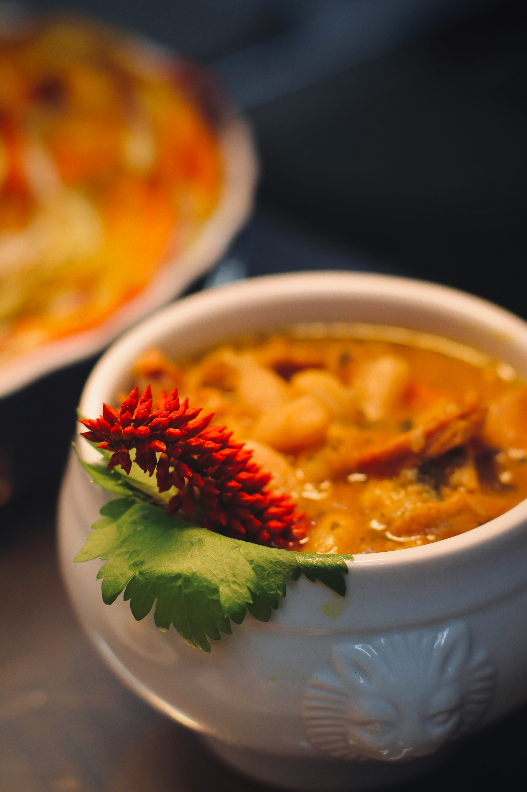

Cassoulet

Description
Cassoulet is a French dish, a stew made out of beans
The stew is a long-cooked dish that combines the flavours of beans with meat and other vegetables
Ingredients
- 500g of Red Beans
- 400g of White Beans
- 1 Thyme leaf
- 2 Clovers of Garlic
- 500g of Peeled Tomatoes
- 200g of Tomato Paste
- 100g of Hot Pepper Jam
- 2 tablespoons of Chilli Sauce
- 300g of Sauted Carrots
- 500g of Ground Beef
- 1 medium-sized Ognion
- 30 ml of Olive oil
Steps
- Start by saute-ing the oignon, the chopped garlic and the carrots when the olive oil in the pan is sizzling
- At the same time leave the beans in a pot with hot water and wait for them to simmer
- Once the oignon caramelizes a liitle add the ground beef into the mix
- Once the beef is cooked, add the peeled tomatoes, the tomato paste and the thyme leaf
- Add the beans
- Leave it on the stove for 8-10 minutes and then proceed to add the chilli sauce and the hot pepper jam
- After another 10 minutes on low heat, you can serve and enjoy the hearty meal
Home